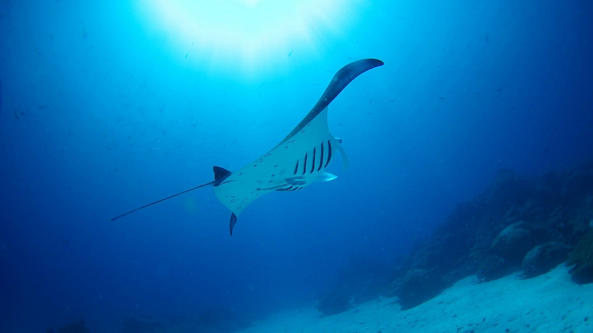
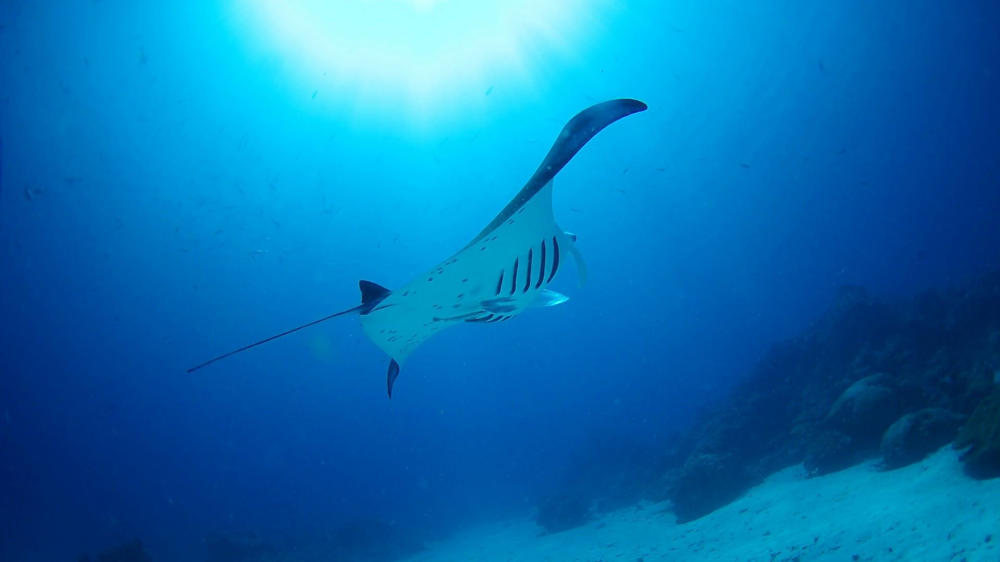
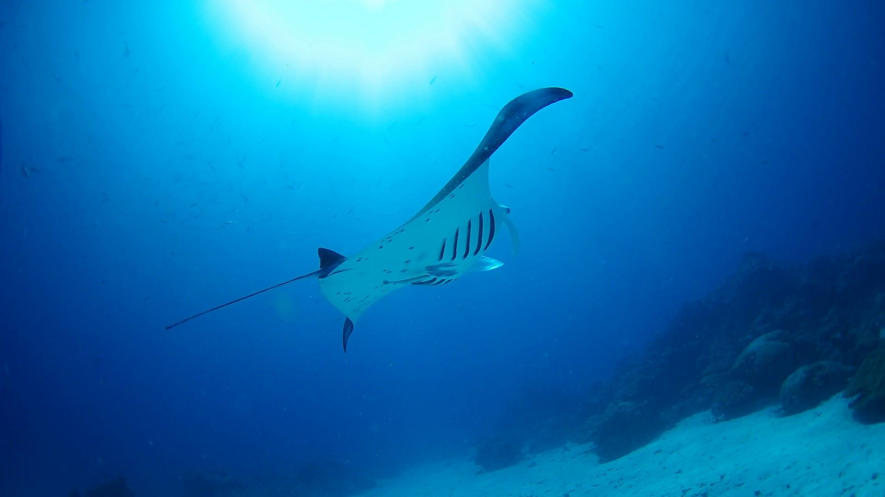
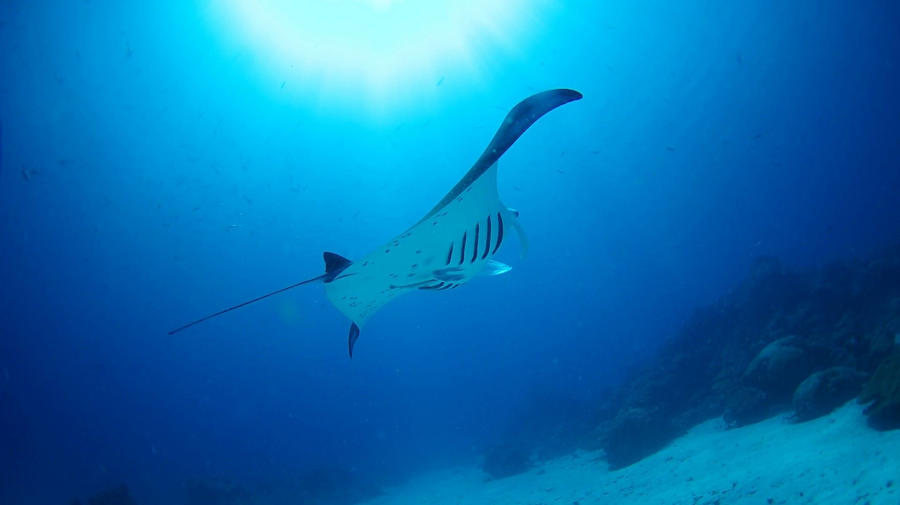

この5日間の旅では、北海道の美しい自然や豊かな文化を存分に楽しむことができます。
札幌の街並みから、小樽の歴史的な風情、富良野・美瑛の絵画のような風景、知床の雄大な自然まで、見どころが満載です。
新鮮な海の幸や地元の特産物もたっぷりお楽しみいただけます。
さあ、北の大地へ冒険に出かけましょう！皆様のご参加を心よりお待ちしております。
この4日間の旅行では、奈良の深い歴史と美しい自然を存分に味わうことができます。
奈良は日本の古都として、豊かな文化遺産と自然が共存する特別な場所です。
奈良町での伝統工芸体験を通じて奈良の文化をより深く理解したり、古民家に宿泊して昔ながらの日本の暮らしを体験したりすることもできます。
ぜひ、奈良の魅力を発見し、心に残る旅をお楽しみください！皆様のご参加を心よりお待ちしております。
この5日間のプランでは、石垣島の魅力を存分に楽しむことができます。
透明度の高い海、豊かな自然、そして独自の文化が融合した石垣島で、あなたの心に残る思い出を作りませんか？
シュノーケリングやジャングル探索、カヌーでマングローブ探検など、アクティブな体験があなたを待っています。
青い海と豊かな自然に囲まれた石垣島で、特別な旅をお楽しみください。
この6日間の旅では、北欧の魅力を存分に体験しながら、神秘的なオーロラを観賞する特別な体験が待っています。
オスロの文化からトロムソ、キルナ、ロバニエミまで、各地の魅力を満喫できます。
大自然の中でのアクティビティや地元の美味しい料理、温かい人々との出会いが、旅の思い出を一層深いものにしてくれることでしょう。
皆様のご参加を心よりお待ちしております！

この5日間のプランでは、壮大な自然の美とエンターテインメントの極致、アメリカの西部を代表する「グランドキャニオン」と「ラスベガス」を巡る特別な旅をお届けします。
世界遺産に登録されたグランドキャニオンの圧倒的なスケールを体感し、ラスベガスの華やかさに浸る贅沢な体験をお届けします。
大切な人との思い出づくりに、ぜひ「キャニオン探訪」にご参加ください！
この10日間のプランでは、インドの多様な文化、歴史、自然を一度に体験することができます。
この旅では、インドの象徴的な名所だけでなく、地元の人々とのふれあいや、心温まる家庭料理も体験できます。
さまざまな文化が交わるこの国で、あなたの心に残る特別な思い出を作りましょう。
皆様のご参加を心よりお待ちしております！